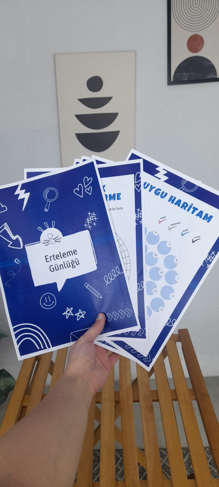
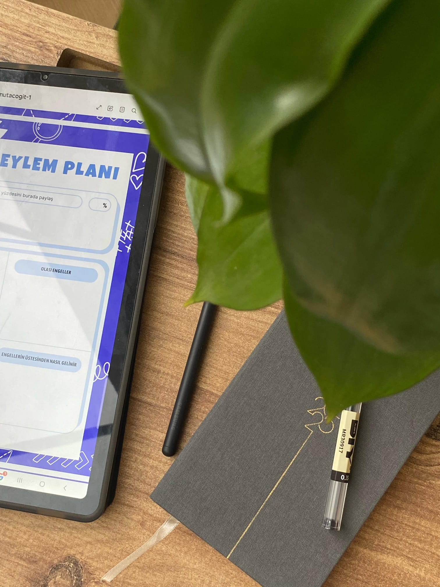

Dükkan'a Dön



Dijital
Ürün
Erteleme Günlüğü
Erteleme davranışınızı düzenleyecek ve zamanınızı daha verimli yönetmenizi sağlayacak kapsamlı planlama günlüğü.
Yapmanız gerekenleri sürekli erteliyor ve bunun stresini mi yaşıyorsunuz? Erteleme Günlüğü sayesinde, gününüzü daha verimli bir şekilde organize edebilir, potansiyelinizi tam anlamıyla kullanabilirsiniz.
- Zaman yönetimini geliştiren pratik yöntemler
- Günlük ve haftalık planlama şablonları
- Motivasyon artırıcı ve harekete geçirici odaklanma alıştırmaları
Başka bir soru veya desteğe ihtiyacınız varsa bizimle iletişime geçin.